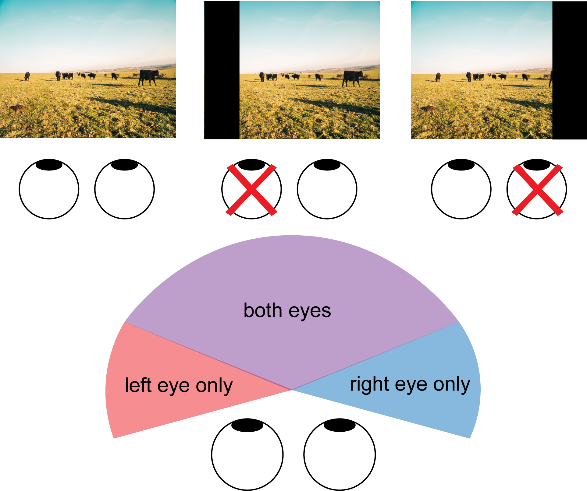

August 23rd, 2022
Why is having two eyes an essential part of our ability to see in 3D? Follow along these demonstrations to get an intuition for what information your brain uses from your two eyes to see in depth.
1. Most of the world is simultaneously seen by both eyes.
Our ability to see in 3D comes from the fact that most of the world is seen by both of our eyes1. With both eyes open, you should experience the seamless picture of the world most of us are used to seeing. Now close your left eye while continuing to look out the right. You'll notice that some of what you could see on your left with both eyes open is now missing. Now do the same with your right eye and notice how some of what you usually see on your right disappears. This is because our eyes get information from overlapping but slightly different parts of the world (Figure 1). When you close one eye you can still see most of what's in front of you because most of the world is still seen by the open eye (Figure 1). Even though most of the world is seen by both eyes, when we close one, we stop being able to see the small part of the world on our far left or right that is only accessed through one eye.

Figure 1. Each eye sees most but not all of the world. If you close one eye, you'll notice that some of what you can see with both eyes disappears. This is because most of the visual world is seen by both eyes, but some parts of the world are seen by only one. This is illustrated on the top where the left or right section of a visual scene is blocked when we close the left or right eye respectively. On the bottom is a cartoon illustration of how much of our visual world is seen by both eyes (purple) versus the left (red) or right (blue) eye only. This is a cartoon depiction and not to scale.
Just because most of the world is seen by both eyes at the same time doesn't mean each eye is seeing exactly the same thing. Each eye sees the things in front of us with a slightly different angle, which means that our brain is always getting two different images of the world at once--one from the left eye and another from the right eye. This phenomenon, known as binocular disparity, might sound like a problem, but this redundancy is the information our visual system exploits to help us see in 3D. The brain combines information from both eyes in a process called stereopsis2,3.
2. Our eyes see two different images.
To see this yourself, place something relatively thin on the table in front of you (for example an upright pen or credit card) or have a friend hold something like a pencil in front of you. With both eyes open, it should be easy to quickly reach straight from the far-right side and touch the item (Figure 2). Now pull your hand back, close one eye, and try again. You should find that this relatively simple task becomes much harder and you're sometimes missing the item with your finger. This is because your depth perception, or the ability to sense how far away your finger is relative to the item on the table, relies on the redundant information you get from both eyes. This is the same reason that it's nearly impossible to thread a needle with one eye closed. When you close one eye the brain is only getting one image from the open eye and no longer has the information needed to sense how far away your finger is relative to the object on the table.
Figure 2. Schematic illustrating the demo for part 2. Closing one eye makes it much harder to sense how far you need to reach to touch the item in front of you.
3. How different the position of objects is in each eye determines how far apart we perceive two objects to be.
Seeing the same thing in both eyes helps us see in 3D because how different objects look to each eye depends on how far they are from each other2. Things that are closer to each other look more similar in each eye than things that are further from each other. To see this yourself hold your index finger in the air near your face at a comfortable distance that you can focus on it (Figure 3). Now hold up a finger on your other hand an inch or so behind your index finger so that the two fingers are in line with each other. While continuing to focus on your front index finger, switch between looking with only your right or left eye. You should notice that what you see in one eye is only slightly different than what you see with the other. Your back finger might jump back and forth a little, but not too much. Keep your front index finger in the same place but move the second finger further back to be an arm's length away. While continuing to focus on your front index finger switch back and forth between looking through only your right or left eye again. This time you should notice a big difference between what you see with your right eye compared to what you see with your left eye. As you switch back and forth between looking through either your left or right eye only you should see your back finger jump back and forth between two very different positions. Our visual systems utilize this information to decide how far away objects are. When objects look more similar to both of our eyes, we see them closer to each other, and when they look more different to our eyes we see them as further from each other.
Figure 3. Objects that are closer in depth produce more similar images in each eye than objects that are further in depth. Demonstration: Place your right index finger close to your face where you're comfortable focusing on it (black outlined hand). Left: Now place your left index finger about an inch or so behind the first (black dash outlined hand). While focusing on your right index finger, switch between looking with your left (red) and right (blue) eyes. The images in each individual eye should be pretty similar. Right: Now place your left index finger at arm's length behind the right index finger. Now when you switch between your left (red) and right (blue) eyes you should see a bigger difference between the images in each eye.
References
1. Spector, R. Visual Fields. in Clinical Methods: The history, physical, and laboratory examinations (eds. Walker, H., Hall, W. & Hurst, J.) Chapter 116 (Butterworths, 1990).
2. Read, J. C. A. Binocular Vision and Stereopsis Across the Animal Kingdom. Annu. Rev. Vis. Sci. 7, 389-415 (2021).
3. Nityananda, V. & Read, J. C. A. Stereopsis in animals: evolution, function and mechanisms. J. Exp. Biol. 220, 2502-2512 (2017).
Image credits
Figure 1: Photo by Ben Collins on Unsplash. Figure made in Illustrator.
Figure 2: Pencil icon by Icons8, One Finger Skin Type 3 icon by Icons8. Figure made in Illustrator.
Figure 3: One Finger Skin Type 3 icon by Icons8. Figure made in Illustrator.